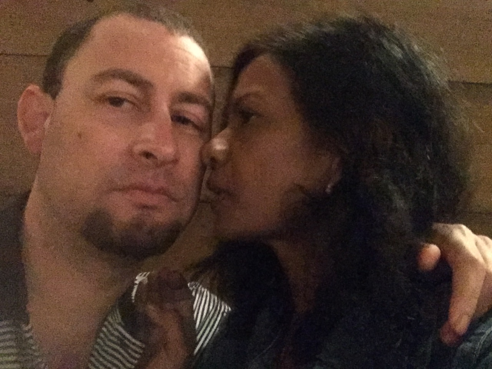

"Six and Stick(Providence)"
The closest to God I have ever been
Is when I totally fell in love with my cosmic twin
Made me a better person wanting to obey the commandments
Feeling totally vulnerable with fears of abandonment
I know it doesn't sound like much fun describing it
But it's truly empowering not concerned how I most benefit
Surrendering to love isn't something you consciously do
Your mind falls your heart rises you're literally split into two
Truthfully it's a war that hurts to lose but feels like winning
Closer to God fulfilled knowing we're no longer sinning
It only happens to a very select few
A certain calling takes over you
A jealous trust stronger then faith
Knowing you're on time even when late
Every fear you learn to appreciate
Imagine that appreciating fear
With the knowledge the end is no longer near
You are finally deservedly where you belong
With the one who gives meaning to love songs
The mundane is fun
When you're with the one
Search is over the lottery is won
No more games you're done
Every day you grow closer
To them to God to the altar
Chemistry off the charts
Inner circuitry wired for two hearts
They actually synchronize
Heaven on earth you realize
This is so rare cause it takes mirror siamese twins
Body and souls separated at conception
Living parallel lives until the process begins
Melded back together at introduction
Preparing since inception chemical combustion
A relationship that gets stronger each day
Questioned like no tomorrow
All others slowly fade away
No past no regrets no sorrow
Giving and receiving no distinction
No thanks necessary
Personal happiness an illusion
Building a legacy
All that matters is our fusion
The final eulogy
Never a bad decision
Never complacency
Male and female intuition
Sacred divinity
True love annihilates the notion of self-mastery
Impossible to turn off no matter how crazy
Contrary to scientific evidence
What takes over is Providence
No longer in control you are selfless
Able to respond no matter how powerless
Absorbed by its Holy Spirit forever overjoyed
Being weak and helpless without feeling any void
Not much else to really say or really prove
It's not that I love but I am You